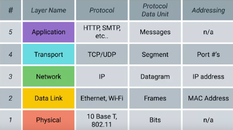

TCP/IP Five Layer Model
Physical Layer :
Represents the physical devices that interconnect computers. (cabling, connectors)
Data Link Layer :
Responsible for defining a common way of interpreting these signals so network devices can communicate.
Ethernet
Network Layer :
Allows different networks to communicate with each other through devices known as routes.
IP = heart of internet
Internetwork : collection of networks . most famous = internet
Transport
Layer
:
Sots out which client and server programs are supposed to get the data.
TCP
UDP : User Datagram Protocol
Application Layer:
Application-specific.
HTTPS,HTTP
